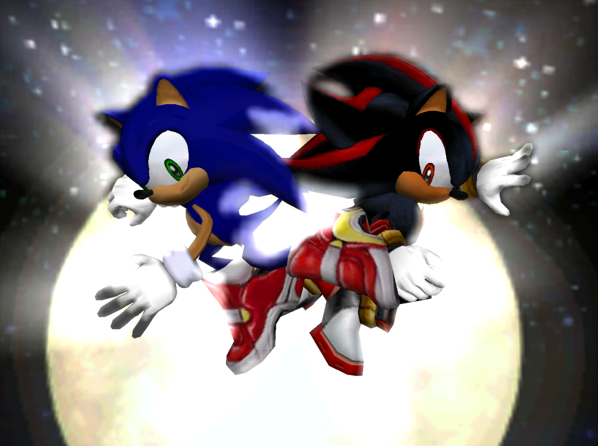
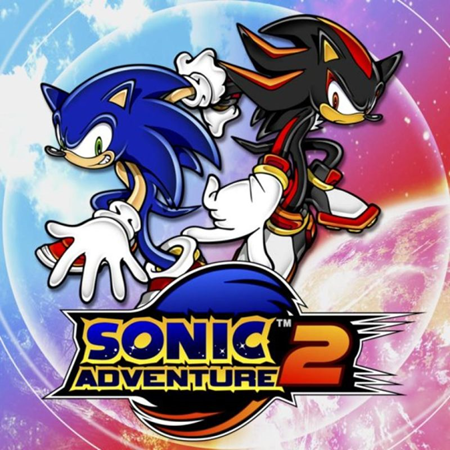

Sonic 3
A melhor adaptação de um jogo para os cinemas
Home
A franquia de jogos Sonic the Hedgehog foi capaz de realizar um feito inédito: com seu terceiro título sendo um sucesso nos cinemas, a franquia de jogos a consolidou uma marcante trilogia nos cinemas.
Nesse terceiro título da franquia, acompanhamos Sonic, Knuckles e Tails se juntarem para enfrentar Shadow, um novo e misterioso antagonista com poderes diferentes de tudo que já enfrentaram antes. As habilidades do trio são superadas em todos os aspectos e eles precisam buscar uma improvável aliança.
Sinopse do filme
Resumo do filme e opiniao
Referência aos jogos
Sonic 3: O Filme teve como principal base para sua trama um dos jogos mais aclamados da franquia: Sonic Adventure 2 jogos responsável por elevar a franquia tanto em termos de jogabilidade e enredo. O antagonista do filme, Shadow, teve sua estreia na franquia nesse jogo, também como antagonista.

A magia de Live and Learn
Live and learn é a música tema do jogo Sonic Adventure 2 que também esta presente como tema principal no filme.
Composta pela banda nipo-americana Crush 40, a música é uma energizante preseça no filme,
sendo um rock energético que, ao entrar em cena, deixa tudo em mais pura adrenalina.
